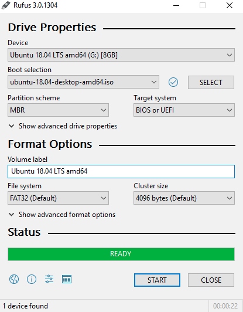

How To install Kali linux
Before installation process we will disscuss how can you install it you can install it on bare matel(hardware) or in virtual machines(virtual box ,Vmware)
- On bare matel(Hardware) we need need a bootable pendrive
- On virtual machines we need image file of Kali linux Official
For installation we need
Installation Process
Attatch bootable USB drive on machine if you are install on direct hardware or start VM after virtually attach image file of linux.
Note : These steps will always same if you install kali in virtual machine or on hardware.- When you start over it you see many options like-
- Live mode- Running in live mode is when you want to test the OS without actually installing it. In live mode, the system is running RAM (that's volatile) and so when you power off your system every change that you made in that session is destroyed. Of course you can store any files of you want by connecting another USB drive or something like that. Many hackers will have a handy Kali Linux live USB in their hands as it can be inserted in any computer and can be used in live mode to do what ever they want and get the changes destroyed without any traces. I also use this mode to check system hardware issue with live mode.
- Forensic mode- it is very useful when you are investigating someones pc in this mode we use kali in a system with -
- The internal hard Disk will never write or overwrites.
- Swap partition of internal disk will never used
- Any internal disk will not be auto mounted
- Hash value of internal Disk will not change when we investigate using forensic mode of kali .
- Install- If you select this your machine install a cli based kali linux
- Graphical Install- For graphical installation of kali on you machine(Recommended for new users).
- Select Language for kali and press Continue.
- Select your location and press Continue.
- Select keyboard language and press Continue.
- Network configuration if not leave it for after installation or select Do not configure network and press Continue.
- Select hostname for you system and press Continue.
- select domain name I prefer to leave it blank and press Continue.
- Set password for root user and press Continue.
- Clock configuration of your machine and press Continue.
- Now the important part of installation comes here many people go wrong if you are installing kali for first time you can follow these step or if you aware with it then go ahead as you want. If you are dual booting your system and you select wrong petition you can loose your all data.
- select guided partition
- You can create other logical volumes but for now I prefer to select use entire disk
- Now select disk partition, in my case it is a virtual machine so i have single partition but in case you have to select free volume or partition correctly on which you want to install kali.
- Now all files in single partition or you want to create more than one partition it is useful to create more than one partition because if your machine fails you would not loose your data, if you reinstall kali on same partition but for now you can select all files in single partition
- Now it is time to write changes on disk.
- Now the installation process begin and it will take some time
- Now if you want a network mirror or proxy you can setup from here or select no at this time.
- Now final part is installing boot loader on machine.
- After installation system will restart automatically you can plug out your bootable pen drive.
Create Bootable pendrive
Using linux and Mac(Using dd command)
Attach pendrive see list of disks attached in system. using command-diskutil list
from result of above command select your pendrive(in my case it shows /dev/disk1)
Now Unmount pendrive using command-
unmountDisk /dev/disk1
Finally run "dd" command for creating bootable pendrive-
sudo dd if=/path/to/iso/file of=/dev/disk1 bs=1m
Note:this may take a lot of time so please wait while running this commandNote-sometime it will take a hour approx
Using Rufus on windows
It will take less than 5 minute for create botable pen drive using RufusDownload Rufus Using Direct Link. Open Rufus and set options like given in image- 
Click on start (it will take a bit of time till visit our other blogs)